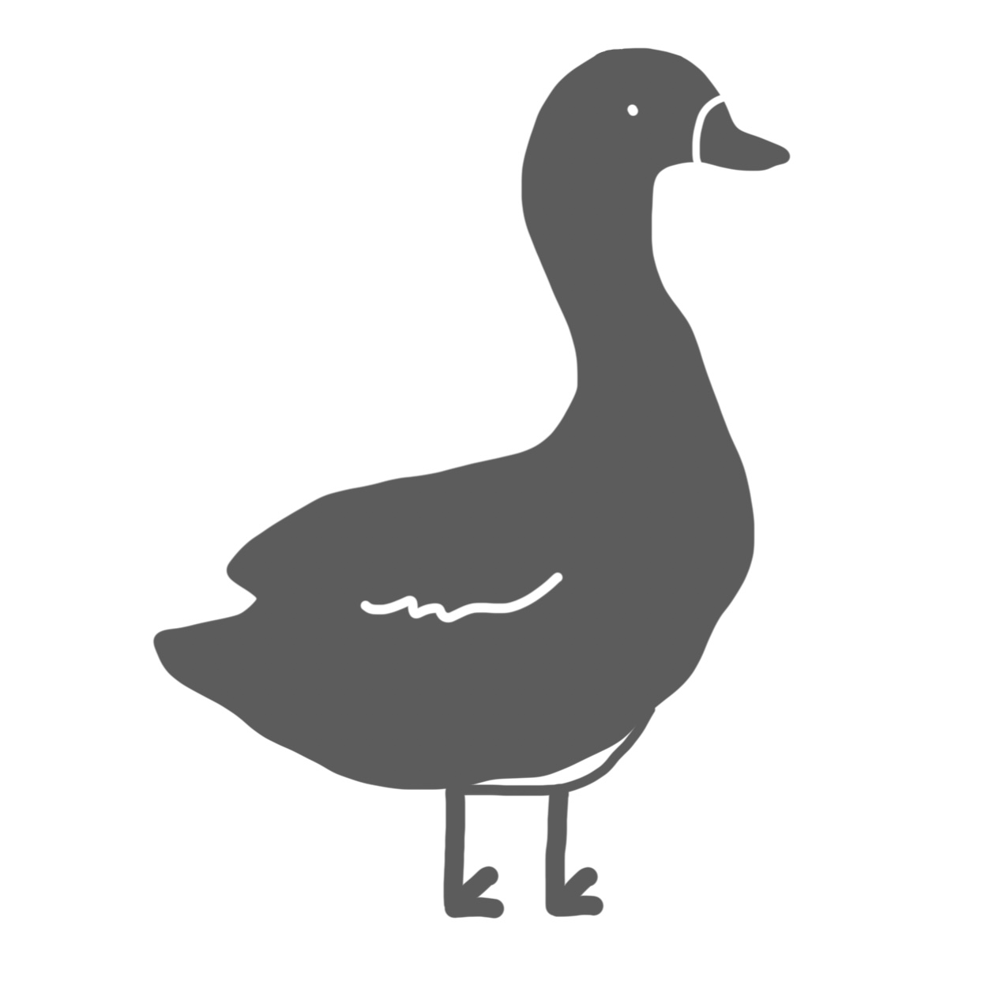

<div class="sidenav-block">
  <!-- 側邊導航欄 -->
  <!-- (mouseenter)：當鼠標進入一個元素時會觸發 -->
  <div class="sidenav" (mouseenter)="open()" (mouseleave)="close()">
    <!-- 先暫時傳到網路上，確定圖片以後再傳到assets -->
    <!-- 畫質比較好的：https://i.imgur.com/RxN5BU8.png -->
    

    <!-- 回首頁 -->
    <div>
      <button class="go-button" (click)="goHomepage()" [disabled]="!isOpen" [ngClass]="{ active: isActiveRoute('/homepage') }">
        <i class="fa fa-home"></i>
        @if(isOpen){
        <span class="sidenav-text" [ngClass]="{ hide: !isOpen }">首頁</span>
        }
      </button>
    </div>

    <!-- 社群貼文首頁 -->
    <div>
      <button class="go-button" (click)="postHome()" [disabled]="!isOpen" [ngClass]="{ active: isActiveRoute('/post_home') }">
        <!-- <i class="fa-solid fa-suitcase-rolling"></i> -->
        <i class="fa-solid fa-seedling"></i>
        @if(isOpen){
        <span class="sidenav-text" [ngClass]="{ hide: !isOpen }">貼文莊園</span>
        }
      </button>
    </div>
    @if(!isLogin){
    <!-- 登入 -->
    <div>
      <button class="go-button" (click)="login()" [disabled]="!isOpen" [ngClass]="{ active: isActiveRoute('/login') }">
        <i class="fa fa-sign-in-alt"></i>
        @if(isOpen){
        <span class="sidenav-text" [ngClass]="{ hide: !isOpen }" >登入</span>
        }
      </button>
    </div>
    } @if(isLogin){
    <!-- 我的最愛 -->
    <div>
      <button class="go-button" (click)="myfavorite()" [disabled]="!isOpen" [ngClass]="{ active: isActiveRoute('/my-favorite') }">
        <i class="fa-solid fa-heart"></i>
        @if(isOpen){
        <span class="sidenav-text" [ngClass]="{ hide: !isOpen }">我的最愛</span>
        }
      </button>
    </div>

    <!-- 會員資料 -->
    <div>
      <button class="go-button" (click)="userInfo()" [disabled]="!isOpen" [ngClass]="{ active: isActiveRoute('/user-info') }">
        <i class="fa-solid fa-user "></i>
        @if(isOpen){
        <span class="sidenav-text" [ngClass]="{ hide: !isOpen }">會員資料</span>
        }
      </button>
    </div>

    <!-- 社群貼文首頁 -->
    <!-- <div>
      <button class="go-button" (click)="postHome()" [disabled]="!isOpen" [ngClass]="{ active: isActiveRoute('/post_home') }">
        <i class="fa-solid fa-seedling"></i>
        @if(isOpen){
        <span class="sidenav-text" [ngClass]="{ hide: !isOpen }">貼文莊園</span>
        }
      </button>
    </div> -->
    <!-- 登出 -->
    <div>
      <button class="go-button" (click)="logout()" [disabled]="!isOpen">
        <i class="fa fa-sign-out"></i>
        @if(isOpen){
        <span class="sidenav-text" [ngClass]="{ hide: !isOpen }">登出</span>
        }
      </button>
    </div>

    <!-- 會員 -->
    <!-- <div>
      <button class="go-button user" [disabled]="!isOpen">
        
        @if(isOpen){
        <span class="sidenav-text userName" [ngClass]="{ hide: !isOpen }">{{userName}}</span>
        }
      </button>
    </div> -->
    }
  </div>

  <!-- 搜尋區域 -->
  <div class="search-block">
    <router-outlet></router-outlet>
  </div>

  <!-- 我的行程 -->
  <!-- @if(!isPostCommentComponent){ -->
  <div
    class="myJourney"
    [ngClass]="{
      hide: myJourney == 0,
      medium: myJourney == 1,
      large: myJourney == 2,
      PostCommentComponent: isPostCommentComponent
    }"
  >
    <button
      class="myJourneyButton"
      (click)="openMyJourney()"
      [ngClass]="{ hide: myJourney != 0 }"
    >
    @if(userImage){
      
    }@else {我}
    的行程
    </button>
    <!-- <div class="icons" [ngClass]="{ hide: myJourney == 0 }">
      <div class="button" (click)="closeMyJourney()">
        <i class="fas fa-times"></i>
      </div> -->
      <!-- <div class="button" (click)="change()">
        <i class="fas" [ngClass]="myJourney == 1 ? 'fa-square' : 'fa-window-restore'"></i>
      </div> -->
    <!-- </div> -->
    <div><app-my-journey></app-my-journey></div>
  </div>

  <!-- } -->

  <!-- 聊天室 -->
  <!-- <button class="chatbutton" (click)="clickchatroom()">
    <i class="fas fa-comments"></i>
  </button>
  <div class="chatroom" [ngClass]="{ hide: !chatroom }">
    <app-chatroom-list></app-chatroom-list>
  </div> -->
</div>

<!-- loading -->
@if(loading$){
<div class="overlay"></div>
<div class="loading">
  
  <p class="lo">請稍後...</p>
</div>
}
